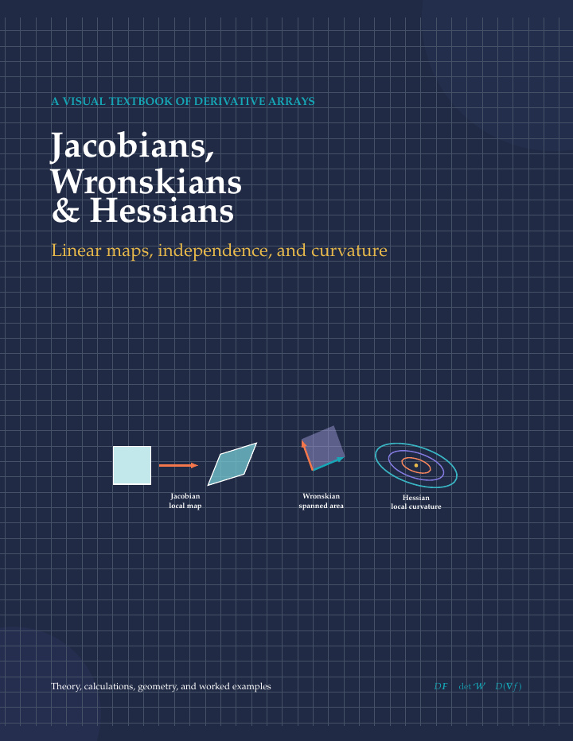
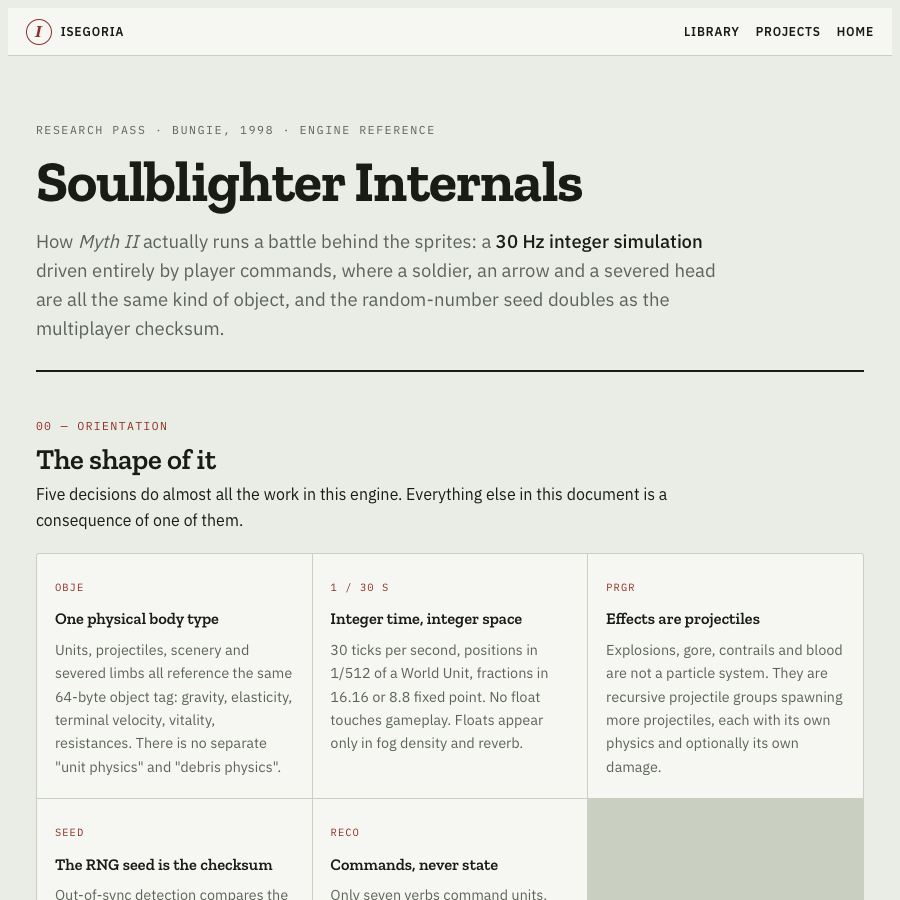
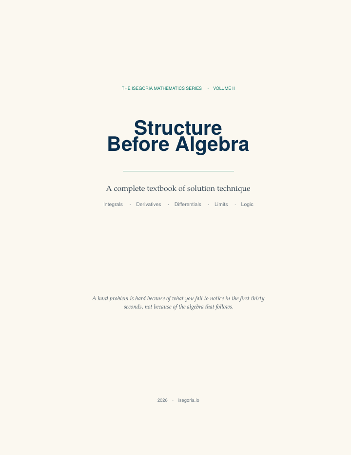
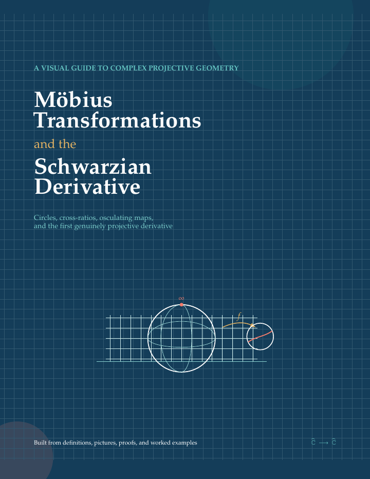
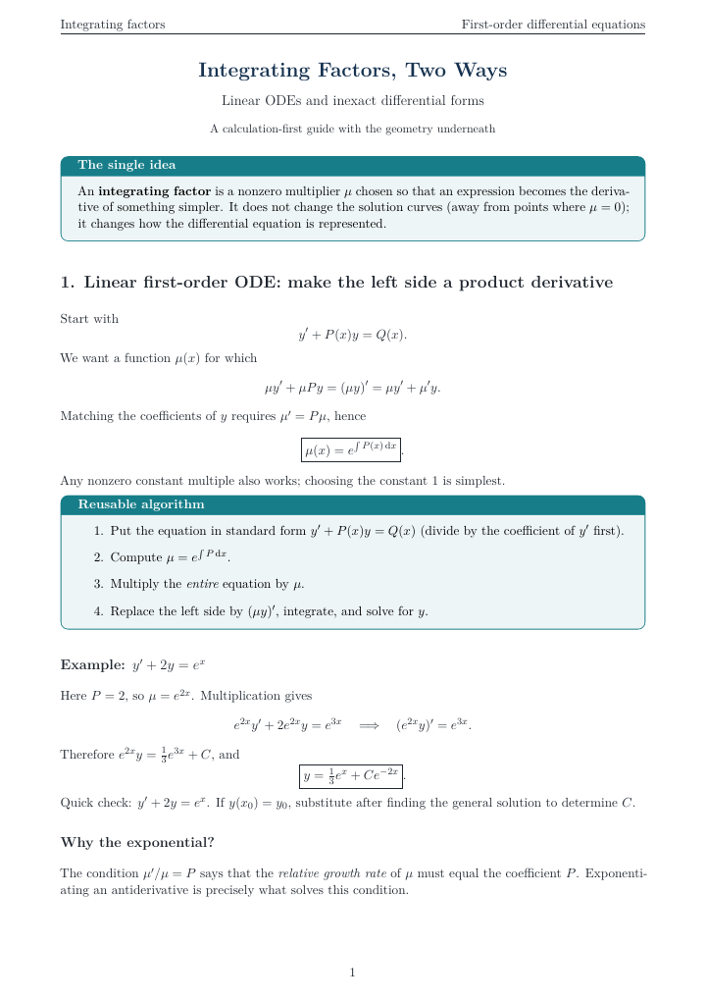
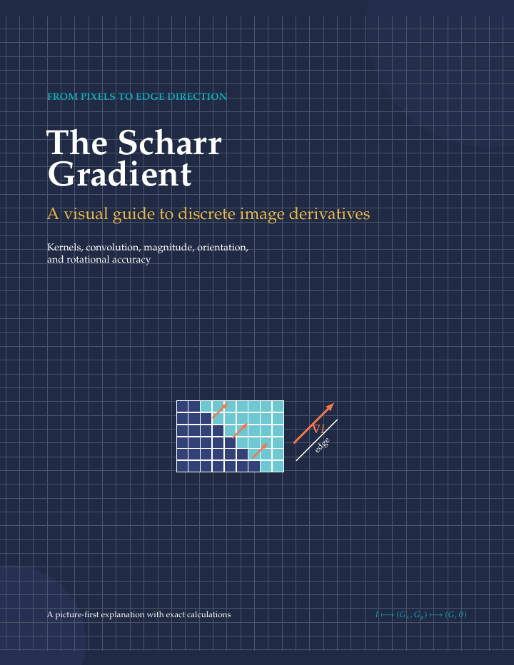
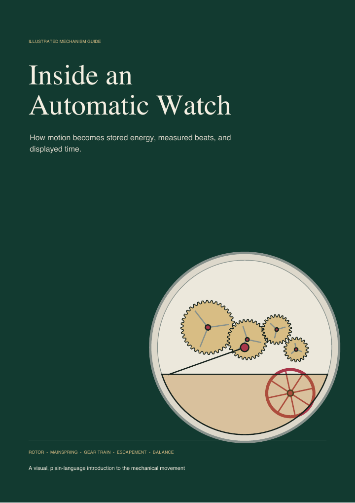

多変数微積分線形常微分方程式
ヤコビアン・ロンスキアン・ヘッシアン
線形写像・独立性・曲率
理論・計算・幾何を図から一体的に学ぶ教科書。例題、判断の手引き、よくある間違い、演習と解答を収録しています。
- 正方形が平行四辺形へ移るヤコビアンの幾何
- ロンスキアン、状態空間の面積、アーベルの恒等式
- ヘッシアン、等高線、極値判定、ニュートン法
ひらかれた視覚ライブラリ
計算の奥にある構造を「見る」ための、丁寧に描かれた教科書。自由に読み、手元に残し、何度でも戻ってこられます。
局所写像
曲率
新刊
ヤコビアンは局所変換を追い、ロンスキアンは解の状態が空間を張るかを調べ、ヘッシアンは局所的な曲率を測ります。

線形写像・独立性・曲率
理論・計算・幾何を図から一体的に学ぶ教科書。例題、判断の手引き、よくある間違い、演習と解答を収録しています。

技術調査フィールドガイド
Myth II は、スプライトの裏側で戦闘をどう動かしているのか。
30 Hz整数シミュレーション、タググラフ、ダメージと弾道、経路探索、決定論的ロックステップ、命令ストリーム、マップスクリプトを図解します。
全コレクション
基礎的な解法から複素幾何、画像処理まで。
6 冊

PDFを読む
PDFを読む
PDFを読む
PDFを読む
PDFを読む条件に一致する出版物はありません。
オープンソースの制作物
ネイティブアプリ、エージェント用ツール、ビジュアルデバッグ基盤、持ち運べるスキル。24件すべてを説明とGitHubへの直リンク付きでまとめました。
24件のプロジェクト説明を見るTypeScript · ゲーム開発
CodexとClaudeのための、ローカルファーストなゲーム素材制作・取り込み・ビジュアルデバッグ・性能解析ツール。
プロジェクト説明を読むネイティブmacOS · Modelica
Modelica標準ライブラリを閲覧し、回路図を描き、システムをシミュレーションして結果を可視化。無料・オフラインで動作します。
プロジェクト説明を読むJavaScript · 開発ツール
封印されたフレーム証拠、最初の差分の視覚診断、同一性を保つ性能比較を提供します。
プロジェクト説明を読む根本にある考え